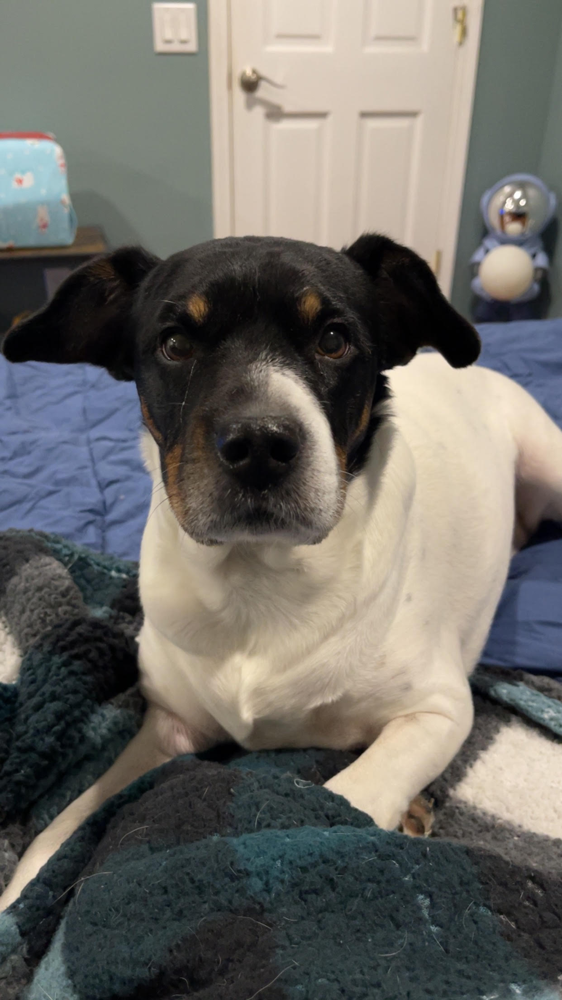
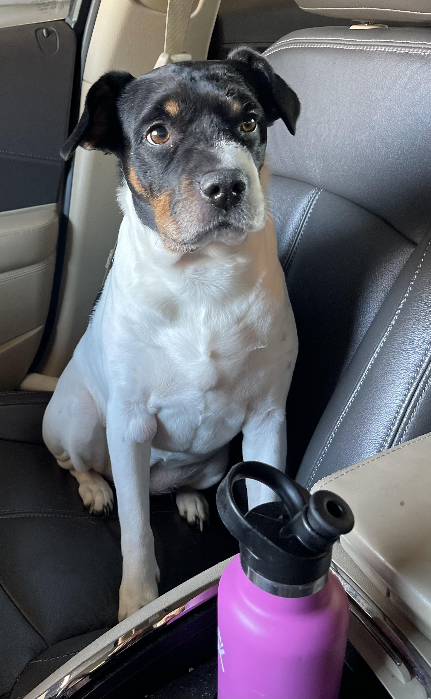
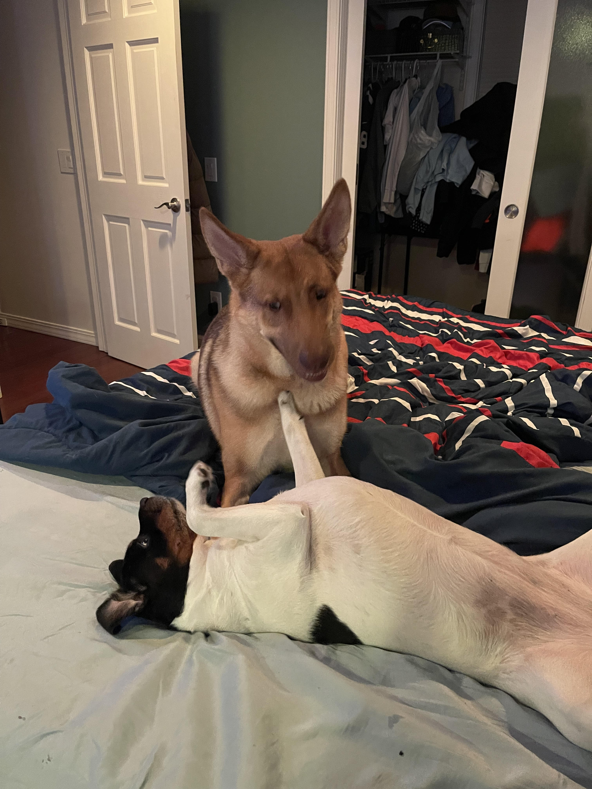
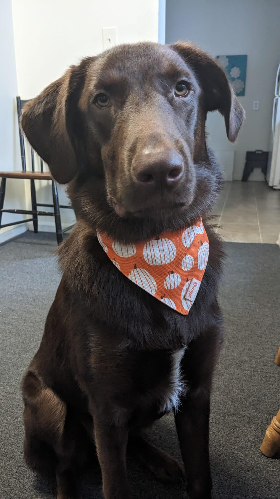
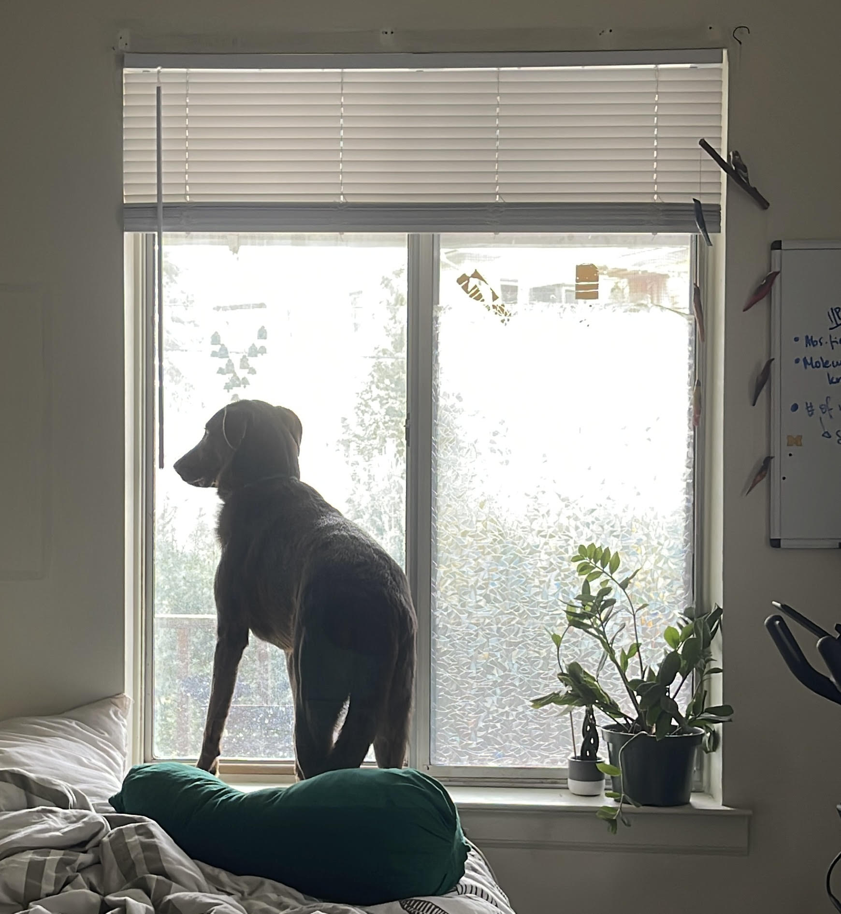
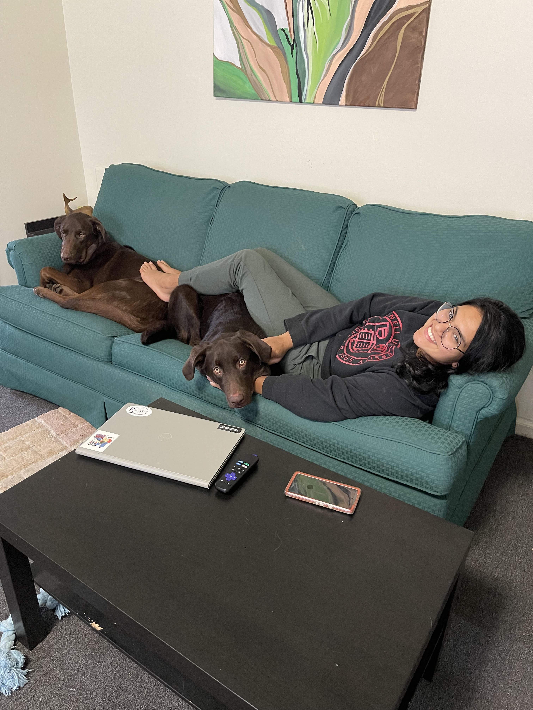

Bacon Q Dog

Bacon Q. Dog is a 9yr old labradoodle. He prefers to spend his days lounging among the three different beds/couches that his family has gifted him. He enjoys a walk or two around the neighborhood, as long as he can pretend that he doesn't see any of the other animals to avoid the embarrassment of not wanting to admit he has no wolf-like skills in chasing them.
At night just as the rest of the family is ready to relax, Bacon suddenly wants to release all of his energy. He will place his toys on a mini couch and frantically drag the couch around, giving his toys "a ride." There is also a lot of rolling. Lots and lots of rolling.
Photo Gallery


Likes
- Belly rubs
- Playing tug-of-war
- Sneaking onto the couch
Zora
Zora is a 4 year old terrier mix. My boyfriend adopted her from the Battle Creek Humane Society. Zora loves to hang out on her bed or on the couch. She loves to run around in her large backyard. She also loves going on long walks. Zora loves food; her favorite food is cheese! She loves dog toys, but usually chews them up within minutes.
Photo Gallery
 Likes
- Cuddling with mom and dad
- Walks around the neighborhood
- Naps
Chickoo
Chickoo is my roommate's dog. He is about 8 months old. She got him from the Humane Society in Ann Arbor. Chickoo has a lot of energy, and loves playing at the dog park. He is such a good boy and rarely ever barks. He has great teeth because his mom brushes them every week.
Photo Gallery
 Likes
- Playing with other dogs
- Going on walks
- Chewing on cardboard